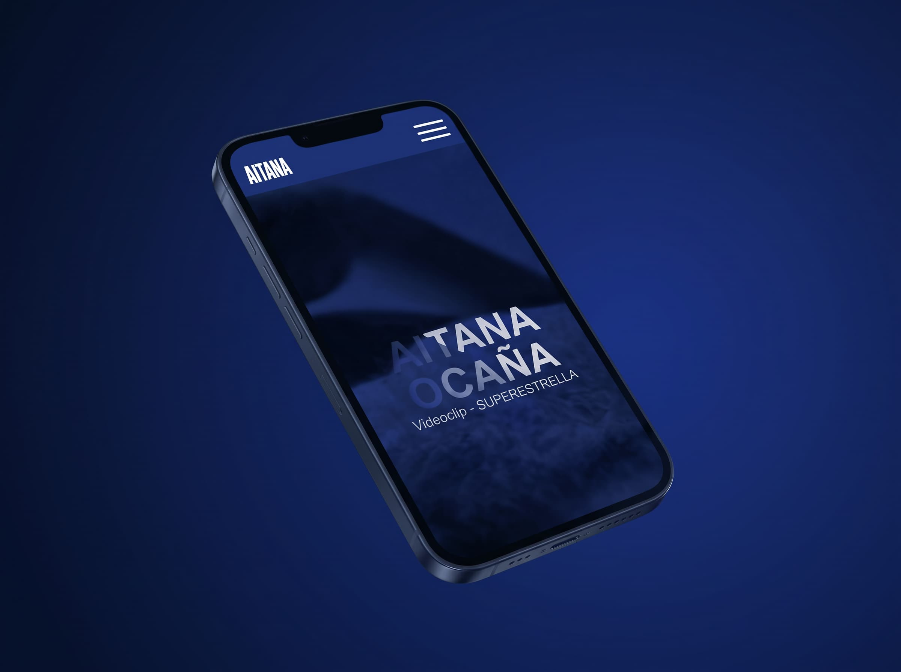
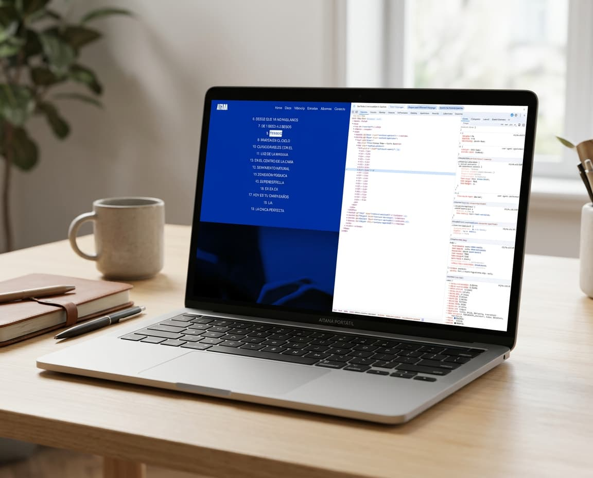
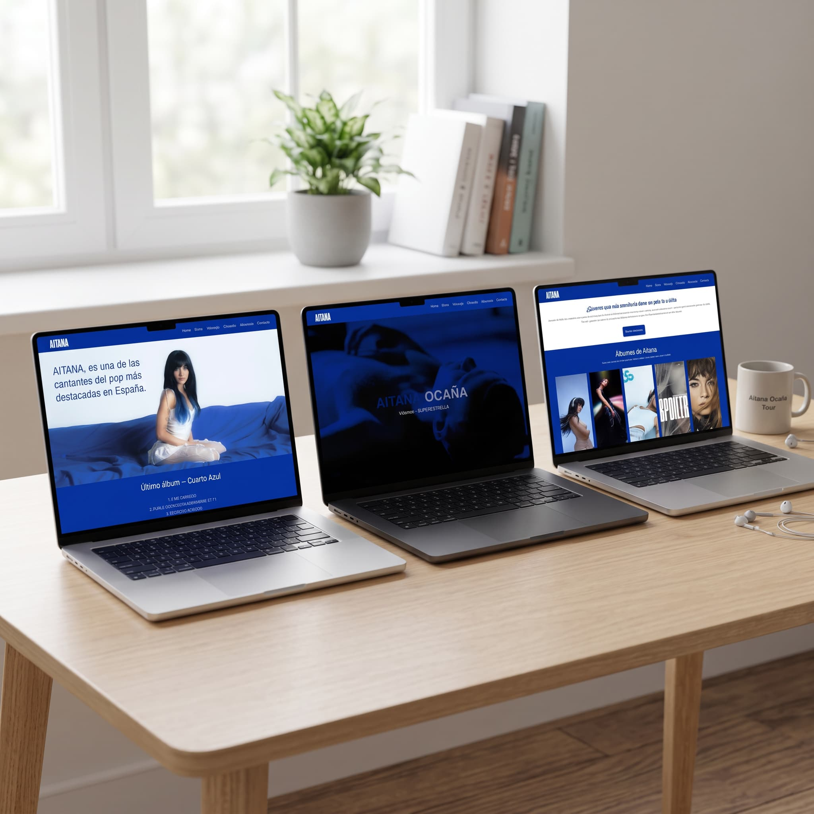
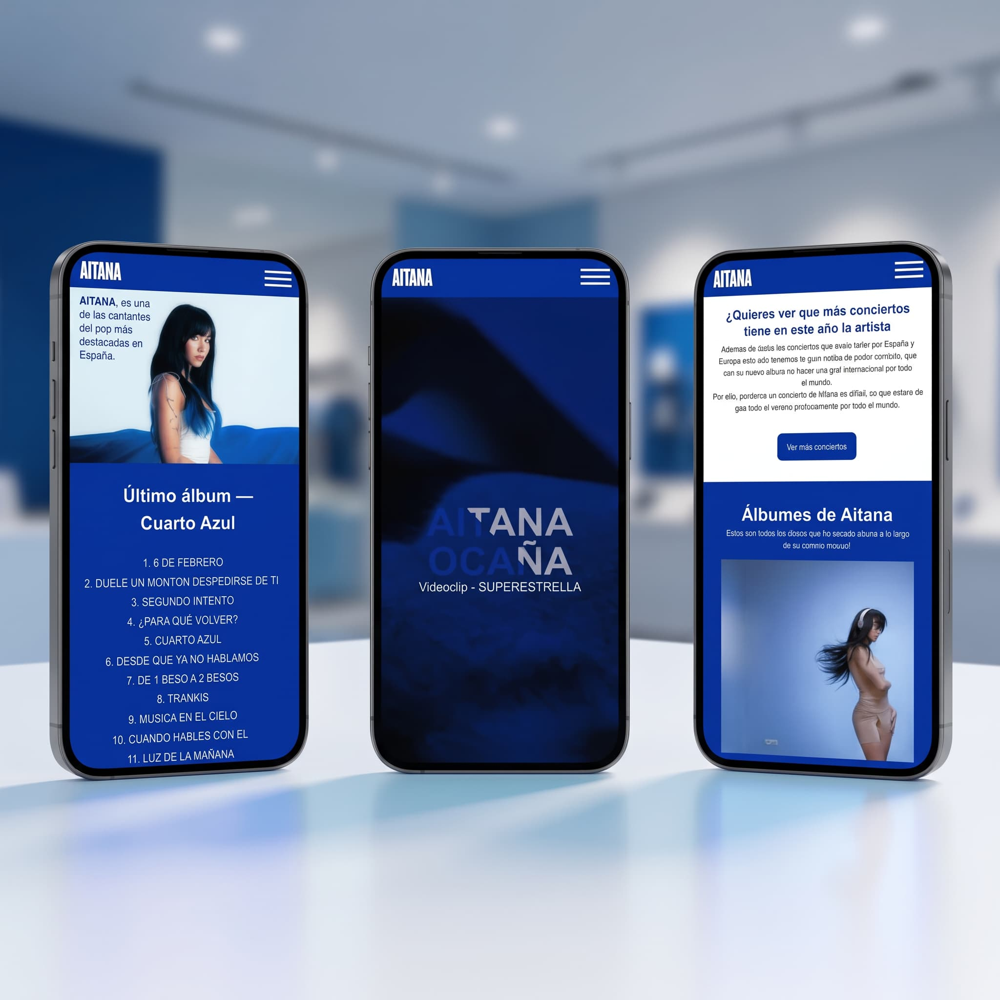
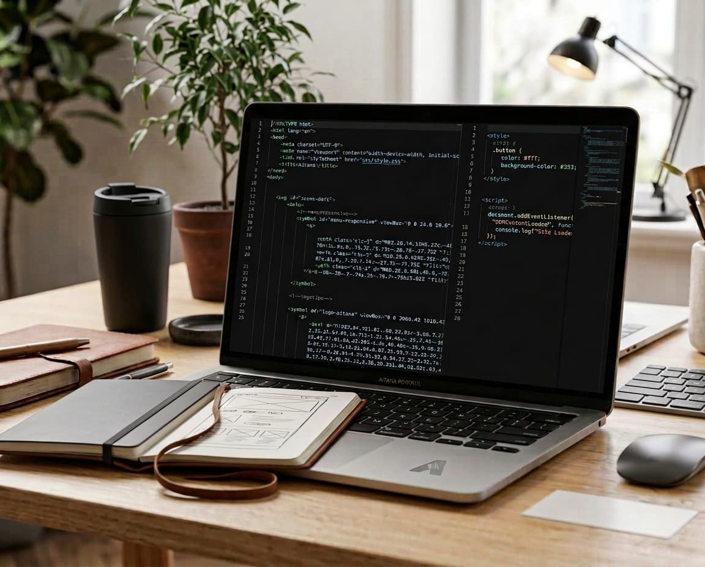

Diseño y desarrollo web
Aitana Ocaña
Proyecto académico desarrollado desde cero como parte del Máster de Programación para Creativos de LABASAD. La propuesta consistía en diseñar y programar una página web dedicada a un artista de nuestra elección, y elegí a Aitana Ocaña.
El proyecto combina diseño visual y programación para crear una experiencia digital inspirada en la identidad artística de Aitana, adaptada a diferentes dispositivos y tamaños de pantalla. A través de HTML, CSS y JavaScript, trabajé en la estructura, el diseño responsive y los elementos visuales e interactivos de la web, buscando una experiencia coherente tanto en ordenador como en tablet y móvil.
- Diseño UX/UI
- Responsive
- HTML, CSS y JavaScript
-

-

-

-

-

- Cliente
- Proyecto académico · LABASAD
- Rol
- Diseño y desarrollo web
- Disciplina
- Desarrollo web
- Herramientas
- Figma
- Visual Studio Code
- Illustrator